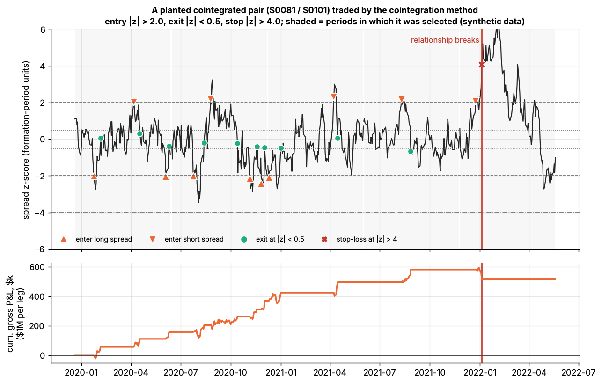
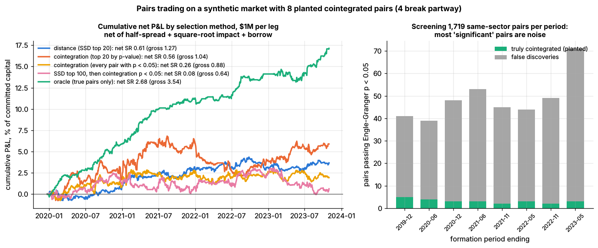

Pairs trading and cointegration¶
TL;DR
- Buy the laggard, short the leader of two stocks whose prices move together, and bet the gap closes: the two-stock case of statistical arbitrage, paid for absorbing temporary price pressure.
- Pairs are chosen by distance (Gatev, Goetzmann & Rouwenhorst 2006) or by cointegration tests (Engle–Granger, Johansen). GGR found up to 11% a year before costs over 1962–2002, with top-20 returns falling from 118 to 38 bps a month after 1988
[Verified].- After realistic costs the simple version has been largely unprofitable since 2002
[Verified].- Selection is the hard part: of the same-sector pairs passing a 5% cointegration test, about 94% are false; Benjamini–Hochberg keeps none (Lab 08, synthetic lab result).
- A broken relationship costs about a period's profit. Stops are insurance, not alpha.
Level: Core · Read time: ~12 min · Last verified: 2026-11
| Field | Value |
|---|---|
| Family | stat arb |
| Edge source | liquidity provision · behavioral |
| Holding period | days to weeks (Lab 08: 16–22 days per round trip) |
| Counterparty: who pays and why they accept it | Investors trading one stock for reasons unrelated to its twin (a liquidation, an index deletion, a block sale) who want execution, not relative value. When the gap is news, the counterparty is informed and the pairs trader pays. |
| Universe & instruments | liquid same-sub-industry US stocks; share classes, dual listings; stock vs sector ETF |
| Data required | total-return prices, corporate actions, industry codes, borrow, earnings and M&A calendars |
| Core algorithms used | D3 Signal transforms · V4 Overfitting and multiple testing · F6 Regime detection · P5 Transaction cost and impact models |
| Infra intensity | low: overnight batch; intraday pairs need simultaneous leg execution |
| Capacity (rough $ range) | $50M–$500M gross per firm [Estimate] (tens of pairs, legs near 1% of ADV in $100M–$1B ADV names); Lab 08 net Sharpe 0.61 at $1M per leg, −0.93 at $16M (synthetic) |
| Typical Sharpe (gross vs net) | GGR top 20, one-day wait, before costs: ≈ 2.0 over 1962–2002, ≈ 1.3 after 1988 (academic backtest) [Estimate] (from their tables); after costs 30–38 bps a month, largely gone after 2002 [Verified]; standalone practitioner net 0–1 [Lore] |
| Turnover | committed capital traded ~7× a year (Lab 08) |
| Main risks / failure modes | false discoveries, breaks, short squeezes, leg risk, crowded unwinds |
| Crowding risk | medium to high: public screens pick the same pairs |
| Firm types that run it | historically bank proprietary desks (Morgan Stanley, 1980s) [Reported]; today mostly inside multi-name stat-arb books [Lore] |
| Lab | Lab 08 |
Intuition (the story in plain English)¶
Two regional banks share a deposit base and a regulator. A large holder dumps one; it falls 4% while its twin is flat, with no news. Buy the laggard, short the leader in a ratio that cancels their shared driver, and wait.
The key word is tethered. In Murray's image of a drunk walking her dog, each wanders, but the leash stops them drifting apart. Correlated daily returns are not a leash: two stocks can correlate at 0.9 and diverge forever. Cointegration means a weighted difference of the log prices, the spread, is stationary and keeps returning to its mean (mean reversion).
Economic rationale: why should this make money at all?¶
- Liquidity provision. Uninformed flow pushes one of two close substitutes away from the law of one price; the pairs trader is paid as the pressure fades. GGR tie profits to temporary mispricing and a latent common factor
[Verified]. - Limits to arbitrage. Even Royal Dutch and Shell, twins with pooled cash flows, drifted with their home markets for years (Froot & Dabora 1999)
[Verified]. Persistence is why the trade pays and why it hurts. - Arbitrage risk. Do & Faff (2010) attribute much of the decline to rising fundamental, noise-trader and synchronization risk, not only efficiency
[Reported].
The trade, step by step¶
- Formation (GGR: 12 months). Rank pairs by the sum of squared differences (SSD) of normalized prices, or test same-industry pairs for cointegration.
- Hedge ratio. Regress log P_A on log P_B: spread = log P_A − α − β log P_B (hedge ratio β). Distance pairs hold $1 long, $1 short.
- Signal. In the trading window (GGR: 6 months), z-score the spread using formation mean and standard deviation.
- Rules (Lab 08). Enter at |z| > 2, exit at |z| < 0.5, stop at |z| > 4 and sit out the period. GGR close when prices cross.
- Other exits: a time stop at 2–3 half-lives, or news
[Lore].
Worked example with numbers¶
Illustrative. Legs of $1M; formation spread standard deviation 2.5%; hedge ratio 1.
| Step | Calculation | P&L |
|---|---|---|
| Entry: A lags B by 5.5% | z = −5.5 / 2.5 = −2.2 → buy $1M A, short $1M B | |
| Exit 12 days later at a 1.0% gap | z = −0.4 | +$45,000 |
| Trading costs | 4 trades × $1M × 15 bps (Lab 08's cost per $ traded) | −$6,000 |
| Borrow on the short | $1M × 0.35% × 12/252 | −$167 |
| Winning trade, net | +$38,833 | |
| Losing trade: gap runs to 10% | stop at z = −4: −4.5% of a leg, plus costs | −$51,000 |
Break-even win rate = 51,000 / (38,833 + 51,000) ≈ 57%. For a spread with no leash (a random walk), the chance of reaching z = −0.5 before z = −4, starting from −2.2, is (4 − 2.2) / (4 − 0.5) ≈ 51% [Estimate] (gambler's-ruin odds). A false pair is a coin flip that pays less than it costs.
Signals and algorithms under the hood¶
Cards: z-score (D3), OLS or minimum-variance hedge ratio (F1, M7), multiple testing (V4), breaks (F6), costs (P5).
# Mirrors Lab 08's core (labs/08-pairs-cointegration/lab.py). Prices are days x stocks.
def ssd_distance(norm_prices): # GGR distance; each column starts at 1
sq = (norm_prices ** 2).sum(axis=0)
ssd = sq[:, None] + sq[None, :] - 2.0 * norm_prices.T @ norm_prices
np.fill_diagonal(ssd, np.inf)
return ssd # trade the 20 smallest entries
def hedge_ratio(log_a, log_b): # Engle-Granger step 1: OLS of A on B
X = np.column_stack([np.ones_like(log_b), log_b])
(alpha, beta), *_ = np.linalg.lstsq(X, log_a, rcond=None)
return beta, alpha, log_a - alpha - beta * log_b # step 2: unit-root test on this spread
def zscore_signals(z, entry=2.0, exit=0.5, stop=4.0): # +1 long spread (long A), -1 short, 0 flat
pos, state, stopped = np.zeros(len(z), int), 0, False
for t, zt in enumerate(z): # z uses formation mean and sd
if state == 0 and not stopped and entry < abs(zt) < stop:
state = -1 if zt > 0 else 1 # bet on convergence
elif state != 0 and abs(zt) >= stop:
state, stopped = 0, True # stop-loss: sit out the rest of the period
elif (state == 1 and zt > -exit) or (state == -1 and zt < exit):
state = 0 # converged: take profit
pos[t] = state
pos[-1] = 0 # flat at period end
return pos
Lab 08 plants 8 cointegrated pairs (4 later break) among 200 synthetic stocks and compares five selection methods.

A planted pair (half-life 4.9 days). Notice the clean convergence trades, then the break (red line): the spread runs through the stop at |z| = 4 and the pair is never selected again. Synthetic data.

Left: net P&L by method; only the oracle (true pairs) is clearly profitable. Right: pairs passing Engle–Granger at p < 0.05 each period, mostly false. Synthetic data.
Synthetic lab result (seed 7): each period 48.8 of 1,719 same-sector pairs pass p < 0.05, only 3.1 of them real. Net Sharpe is 0.61 (distance) and 0.56 (cointegration top 20), against 2.68 for the oracle. Seed 7 is lucky: across 8 seeds the median net Sharpe is about −0.1 and −0.4, while the oracle ranges from +1.0 to +2.7. Caveat: the toy has no natural cointegration, so distance looks worse than in GGR's data.
Implementation choices that matter¶
- Candidate set. Testing all 19,900 pairs guarantees false positives; restrict by economics (sub-industry, share classes, supply chains). SSD-then-test double-dips: Lab 08's SSD top 100 pass at 29%, yet about 3 are real.
- Power. A year of daily data detects only half of Lab 08's true pairs.
- Hedge ratio. OLS of A on B is not the inverse of B on A; total least squares or Johansen are symmetric. Desks update betas with rolling or Kalman-filter estimates (Elliott, van der Hoek & Malcolm 2005; Chan 2013)
[Verified]. - Thresholds. Fit an Ornstein–Uhlenbeck process; set entry from costs and exit after 2–3 half-lives
[Lore]. Flatten before earnings; drop pairs with pending M&A. - Execution. Trade both legs together; borrow and recalls bind on the short leg (shorting and financing).
P&L decomposition¶
Illustrative $100M gross book (40 pairs), one year:
| Line | $M | % of gross |
|---|---|---|
| Convergence gains on pairs that revert | +6.0 | +6.0 |
| Losses on stops, breaks and period-end closes | −3.0 | −3.0 |
| Spread and impact ($700M traded × 12 bps) | −0.84 | −0.84 |
| Commissions and fees | −0.07 | −0.07 |
| Borrow ($50M short × 30 bps) | −0.15 | −0.15 |
| Financing spread on longs | −0.25 | −0.25 |
| Net | +1.69 | +1.7 |
At 3% volatility on gross, Sharpe ≈ 0.55. Idle capital is the hidden cost: GGR's returns on committed capital run about 40% below fully invested ones [Verified].
Evidence¶
- GGR (2006). Distance pairs, 1962–2002: top 20 earned 1.44% a month fully invested (0.81% on committed capital), 0.90% when trading a day late. The gap implies ~162 bps round-trip cost per pair, leaving 113–225 bps net per six months. A 1999–2002 holdout earned 10.4% a year at 3.8% volatility. After 1988, returns fell from 118 to 38 bps a month; risk-adjusted, from 67 to 42
[Verified]. - Do & Faff (2010). Decline continued to 2009, but pairs did well in prolonged turbulence, such as 2007–09
[Verified]. - Do & Faff (2012). Net of commissions, impact and short fees: about 30 bps a month risk-adjusted, largely unprofitable after 2002
[Verified]. - Rad, Low & Faff (2016). 1962–2014: distance, cointegration and copula earned 91, 85 and 43 bps a month before costs, 38, 33 and 5 after; opportunities thinned after 2009
[Verified].
Capacity, crowding and decay¶
Lab 08's capacity curve (net Sharpe by $ per leg, synthetic):
| $ per leg | $0.25M | $1M | $4M | $16M |
|---|---|---|---|---|
| Distance | 0.86 | 0.61 | 0.09 | −0.93 |
| Cointegration, top 20 | 0.75 | 0.56 | 0.17 | −0.60 |
The toy trades each leg in one day against $63M of ADV; real desks work orders in larger names, so capacity is higher [Estimate], but capped by the few good pairs and the smaller leg's liquidity.
How it fails¶
- The pair never existed (most screened pairs; see above).
- The relationship breaks. Lab 08's four breaks cost −2.2%, −4.0%, −0.5% and −7.2% of a leg, against +6.5% for an intact pair-period; without the stop, −11.3%, +20.8%, −0.4% and −7.2% (synthetic lab result). The stop capped the worst loss and cut a winner.
- Crowded unwind, August 2007. A model contrarian strategy lost 6.85% over 7–9 August, then regained 5.92% on 10 August (Khandani & Lo)
[Verified]; see the failure gallery. - Squeeze, October 2008. After Porsche's 26 October disclosure, VW ordinaries went from €211 to above €1,005 on 28 October; shorts of the "overvalued" ordinaries lost an estimated €20B+ (Allen et al. 2021)
[Reported].
Textbook vs how it's done today¶
- Textbook: rank all pairs by distance. Practice: economically linked candidates, multiple-testing control, out-of-sample survival
[Lore]. - Textbook: static OLS beta. Practice: Kalman or rolling betas (Elliott et al. 2005; Chan 2013)
[Verified]. - Textbook: fixed 2-sigma entry. Practice: half-life- and cost-based thresholds, time stops
[Lore]. - Textbook: a standalone book. Practice: one input to a factor-neutral residual book (stat-arb overview)
[Lore].
Variants and neighbours¶
- Baskets: Johansen handles several stocks; cointegrated triplets earned less than pairs (Do & Faff 2016)
[Verified]. - Stock vs ETF: the single-partner form of factor-residual mean reversion.
- Copulas: model the joint distribution, not a linear spread (Rad et al. 2016).
- Contractual leashes: share classes, dual listings, ETF and index arbitrage, merger arbitrage (event-driven).
Diagram¶
flowchart LR
U["Candidate pairs<br/>same sub-industry"] --> S["Screen<br/>SSD or Engle-Granger"]
S --> M{"Survives multiple-testing<br/>and holdout?"}
M -->|"no: likely false"| X["Drop"]
M -->|"yes"| H["Hedge ratio<br/>OLS, TLS or Kalman"]
H --> Z["Spread z-score<br/>formation mean and sd"]
Z --> R["Entry, exit, stop<br/>and time stop"]
R --> E["Execute both legs<br/>borrow the short"]
E --> P["P and L, break monitor"]
P -->|"break detected"| XstateDiagram-v2
Flat --> LongSpread : z below -2
Flat --> ShortSpread : z above +2
LongSpread --> Flat : z back above -0.5
ShortSpread --> Flat : z back below +0.5
LongSpread --> Stopped : abs z at least 4
ShortSpread --> Stopped : abs z at least 4
Stopped --> Flat : next trading periodHow practitioners talk about it¶
- "Half-life is eight days; if it hasn't come in by week three, we're out." → A time stop.
- "It passed at 1%, but so did 40 others out of 2,000." → Multiple testing.
- "The beta went from 0.9 to 1.3 after the acquisition." → A structural break.
- "It stopped out at four sigma and came back the next week." → Stops are insurance; insurance costs premium.
- "Distance pairs are half a reversal factor." → GGR's pre-1989 pairs loaded on short-term reversal, yet earned alpha beyond it
[Verified].
Myths vs reality¶
- Myth: high correlation makes a good pair. Reality: correlated returns do not tie prices together.
- Myth: passing a 5% test proves the relationship. Reality: 1,719 tests yield dozens of chance passes.
- Myth: market neutral means safe. Reality: breaks, squeezes and crowding.
Questions you could ask a quant about this¶
- Basic: How many candidate pairs do you test, and how are they chosen?
- Informed: How do you correct for multiple testing, and how many pairs survive out of sample?
- Informed: OLS, total least squares or Kalman for the hedge ratio?
- Sharp: What share of losses come from pairs that broke versus pairs that never were?
- Sharp: How correlated is pairs P&L with the reversal factor?
- Sharp: 🔒 Which pair families still pay after costs, and at what size?
Go deeper¶
Math: cointegration tests, the OU spread, and false discoveries
Cointegration. Log prices \(p_A, p_B\) are each I(1). They are cointegrated if some \(\beta\) makes \(s_t = p_{A,t} - \alpha - \beta\, p_{B,t}\) stationary. Engle–Granger: estimate \(\alpha, \beta\) by OLS, then run an ADF regression
and reject a unit root if \(\gamma\) is significantly negative; critical values are more negative than standard ADF tables because \(\beta\) was fitted. Johansen tests the rank of \(\Pi\) in \(\Delta Y_t = \Pi Y_{t-1} + \sum_i \Gamma_i \Delta Y_{t-i} + \varepsilon_t\) (the number of cointegrating vectors).
OU spread. \(ds = \theta(\mu - s)\,dt + \sigma\,dW\); as a daily AR(1), \(s_{t+1} = a + b\,s_t + \zeta\) with \(b = e^{-\theta}\):
A 10-day half-life gives \(b \approx 0.933\): hard to tell from 1 with a year of data.
False discoveries. Benjamini–Hochberg sorts p-values \(p_{(1)} \le \dots \le p_{(m)}\) and rejects the \(k\) smallest, with \(k\) the largest index satisfying
At \(m = 1{,}719\), \(q = 0.05\), any discovery needs a p-value below \(2.9 \times 10^{-5}\).
Related pages¶
- Stat arb: overview and history · Factor-residual mean reversion · Short-term cross-sectional reversal
- V4 Overfitting and multiple testing · P5 Transaction cost and impact models · M7 Hedging algorithms
- Strategy failure gallery · Shorting, financing and settlement
Sources¶
- [Verified] Gatev, E., Goetzmann, W. N. & Rouwenhorst, K. G. (2006). "Pairs Trading: Performance of a Relative-Value Arbitrage Rule." Review of Financial Studies 19(3), 797–827 (figures from the February 2006 author version, Tables 1, 2 and 8). https://doi.org/10.1093/rfs/hhj020 (accessed 2026-11)
- [Verified] Engle, R. F. & Granger, C. W. J. (1987). "Co-Integration and Error Correction: Representation, Estimation, and Testing." Econometrica 55(2), 251–276. https://doi.org/10.2307/1913236 (accessed 2026-11)
- [Verified] Johansen, S. (1988). "Statistical analysis of cointegration vectors." Journal of Economic Dynamics and Control 12(2–3), 231–254. https://doi.org/10.1016/0165-1889(88)90041-3 (accessed 2026-11)
- [Verified] Murray, M. P. (1994). "A Drunk and Her Dog: An Illustration of Cointegration and Error Correction." The American Statistician 48(1), 37–39. https://doi.org/10.1080/00031305.1994.10476017 (accessed 2026-11)
- [Verified] Do, B. & Faff, R. (2010). "Does Simple Pairs Trading Still Work?" Financial Analysts Journal 66(4), 83–95. https://doi.org/10.2469/faj.v66.n4.1 (accessed 2026-11)
- [Verified] Do, B. & Faff, R. (2012). "Are Pairs Trading Profits Robust to Trading Costs?" Journal of Financial Research 35(2), 261–287. https://doi.org/10.1111/j.1475-6803.2012.01317.x (accessed 2026-11)
- [Verified] Do, B. & Faff, R. (2016). "Cointegration and Relative Value Arbitrage." SSRN working paper. https://doi.org/10.2139/ssrn.2785045 (accessed 2026-11)
- [Verified] Rad, H., Low, R. K. Y. & Faff, R. (2016). "The profitability of pairs trading strategies: distance, cointegration and copula methods." Quantitative Finance 16(10), 1541–1558. https://doi.org/10.1080/14697688.2016.1164337 (accessed 2026-11)
- [Verified] Elliott, R. J., van der Hoek, J. & Malcolm, W. P. (2005). "Pairs trading." Quantitative Finance 5(3), 271–276. https://doi.org/10.1080/14697680500149370 (accessed 2026-11)
- [Reported] Chan, E. P. (2013). Algorithmic Trading: Winning Strategies and Their Rationale. Wiley (Kalman-filter hedge ratios). https://doi.org/10.1002/9781118676998 (accessed 2026-11)
- [Verified] Froot, K. A. & Dabora, E. M. (1999). "How are stock prices affected by the location of trade?" Journal of Financial Economics 53(2), 189–216. https://doi.org/10.1016/S0304-405X(99)00020-3 (accessed 2026-11)
- [Verified] Benjamini, Y. & Hochberg, Y. (1995). "Controlling the False Discovery Rate: A Practical and Powerful Approach to Multiple Testing." Journal of the Royal Statistical Society B 57(1), 289–300. https://doi.org/10.1111/j.2517-6161.1995.tb02031.x (accessed 2026-11)
- [Verified] Khandani, A. E. & Lo, A. W. (2011). "What happened to the quants in August 2007? Evidence from factors and transactions data." Journal of Financial Markets 14(1), 1–46. https://doi.org/10.1016/j.finmar.2010.07.005 (accessed 2026-11)
- [Reported] Allen, F., Haas, M., Nowak, E. & Tengulov, A. (2021). "Market efficiency and limits to arbitrage: Evidence from the Volkswagen short squeeze." Journal of Financial Economics 142(1), 166–194; summary on the Harvard Law School Forum on Corporate Governance. https://corpgov.law.harvard.edu/2021/09/15/market-efficiency-and-limits-to-arbitrage-evidence-from-the-volkswagen-short-squeeze/ (accessed 2026-11)